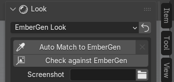

Vérifier contre EmberGen et Auto Match
Ces outils se trouvent dans la section Look du panneau, quand le préréglage est EmberGen Look et que le
projet .ember est connu.


Les deux travaillent dans un Blender d'arrière-plan : votre session reste utilisable et ne rend rien elle-même. Ce Blender d'arrière-plan rend avec Cycles et utilise la carte graphique choisie dans Preferences > System (voir Dépannage). Un seul travail à la fois : pendant une vérification ou un Auto Match, la ligne « Checking in the background... » ou « Auto Match in the background... » remplace les boutons, et la croix à droite (Cancel Check) l'arrête.
La référence : ce qu'EmberGen a rendu
Pour comparer, il faut une image d'EmberGen :
- le rendu enregistré dans le projet : EmberGen garde dans le
.emberun petit film de la simulation ; il est utilisé tout seul quand il montre des images qui ont été exportées ; - ou une capture d'écran : choisissez-la dans Screenshot (fenêtre entière d'EmberGen ou seulement sa vue 3D) et indiquez dans At Frame l'image de la timeline d'EmberGen qu'elle montre.
Si EmberGen n'a enregistré qu'une vignette, le rapport le dit (« EmberGen n'a enregistré qu'une vignette dans le projet : aucun rendu de référence à comparer ») et propose d'ajouter une capture. Si le film enregistré ne montre aucune image exportée, réexportez depuis EmberGen la plage d'images que vous regardez.
Vérifier contre EmberGen
Check against EmberGen rend, dans le Blender d'arrière-plan, les images exportées que montre la référence, puis les compare à EmberGen zone par zone (cœur des flammes, flammes, fumée éclairée, fumée dans l'ombre…). Sur un gros projet, comptez plusieurs minutes (le travail est arrêté au bout de 15 minutes).
Avant de lancer, l'add-on vérifie la scène : s'il manque quelque chose (par exemple une lumière du projet), il répond « Fix the scene first (… problem(s) in the project report) » et le rapport dit quoi corriger.
À la fin :
- l'image EmberGen | Blender apparaît sous le bouton, côte à côte ;
- les différences mesurées s'ajoutent au rapport du projet, par exemple « La fumée éclairée est plus sombre » ou « L'effet est moins étendu que dans EmberGen » ;
- si les couleurs sont proches partout : « Couleurs proches d'EmberGen dans toutes les zones mesurées » ;
- si un Auto Match peut aider, le rapport le propose avec son bouton.
Quand le rendu ne se superpose pas à la référence (autre instant, autre cadrage), seules les couleurs sont comparées, et le rapport le dit.
Auto Match
Auto Match to EmberGen cale le look de Blender sur la référence, sans intervention :
- il rend quelques images en basse résolution dans le Blender d'arrière-plan (le sol de l'add-on est caché, car EmberGen n'en dessine pas) ;
- il ajuste les corrections du look une par une, en mesurant l'écart avec EmberGen sur plusieurs images ;
- il vérifie le résultat sur d'autres images, jamais utilisées pendant la recherche : les corrections ne sont gardées que si elles y font mieux que le look de départ.
Durée : de 1 à 5 minutes en général, jusqu'à 30 minutes sur un projet lourd (arrêt forcé au bout de 40 minutes).
Le résultat s'affiche sous le bouton :
- coche : « Calé sur le rendu EmberGen : écart 0,300 -> 0,200 » (l'écart a baissé, les corrections sont appliquées) ;
- icône d'information : « Aucune correction gardée : aucune ne fait mieux que le look actuel sur des frames hors recherche ». Cela veut dire que les corrections trouvées amélioraient les images de la recherche mais pas les autres : le look actuel est déjà le meilleur, rien n'a été changé. Ce n'est pas une erreur.
La mention « couleurs seules : autre instant » indique que la référence ne se superposait pas au rendu : seules les couleurs ont été calées.
Ce qui est appris est gardé sur l'export et réutilisé pour vos projets suivants. La croix à droite du bouton (Reset Auto Match) oublie les corrections de cet export et reconstruit le look depuis le projet.
Vérifier tout seul après l'import
Dans les préférences de l'add-on (Edit > Preferences > Add-ons > JangaFX Bridge), la case Vérifier contre EmberGen après l'import lance Check against EmberGen tout seul après Open Project ou Import d'un projet EmberGen, quand une référence est utilisable (rendu enregistré qui montre des images exportées, ou capture choisie).
Elle est décochée par défaut : le rendu d'arrière-plan partage la carte graphique avec votre session. Elle ne fait rien pour LiquiGen, ni pendant une autre vérification ou un Auto Match.
Vérifier un projet LiquiGen
LiquiGen n'enregistre aucun rendu dans son projet : il faut une capture. Dans la section Liquid :
- faites une capture dans LiquiGen (un rendu, ou la vue 3D seule), vue par la caméra du projet ;
- choisissez-la dans LiquiGen Capture ; At Frame prend l'image courante de la scène, corrigez-la si besoin pour qu'elle corresponde à l'image de la capture ;
- cliquez sur Check against LiquiGen.
Le bouton reste grisé tant qu'il n'y a pas de capture ; la raison est écrite dessous. La comparaison porte sur la forme, la luminosité, les couleurs et les reflets, et les différences s'ajoutent au rapport. Les seuils de cette comparaison sont provisoires (pas encore mesurés sur des captures LiquiGen) ; il n'y a pas d'Auto Match pour LiquiGen.